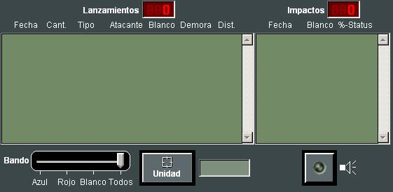

Informacion del Ejercicio
En las siguientes ventanas se muestran los siguientes informes que recopilan y resumen información del Ejercicio en Ejecución:
- Informe de Unidades.
- Informe de Entidades Perecederas.
- Informe de Lanzamientos.
- Informe de Daños.
- Plan de Acciones.
- Generación de Informes de Rutas de Tráfico Mercante y Aerovías.

Información de Unidades:
En este diálogo se presenta una lista con todas las unidades que forman parte del Ejercicio, mostrando la siguiente información de cada una:
- Numeral de la unidad
- Bando (ROJO, AZUL o BLANCO) al que pertenece la unidad.
Si se trata de Unidad de Ambientación, el bando aparece entre corchetes. - Categoría (SUP., SUB., AIRE, HELO, BASE, TERR.) de la unidad.
- % Daño.
- Posición
- Rumbo (en grados)
- Velocidad (en nudos)
- Altura / Profundidad (en pies)
- % Combustible
- % Batería
Las unidades en la lista pueden ser ordenadas por Numeral o por Categoría, y pueden ser filtradas por Bando.
Seleccionando una Unidad de la lista el Instructor puede:
- Consultar Datos Generales de la unidad (ver apartado correspondiente).
- Copiar Unidad. Abre el siguiente diálogo, mediante el que el Instructor puede asignar Nombre, Numeral y Posición para la nueva unidad copia.
Información de Entidades Perecederas:
En este diálogo se presenta una lista con todas las Entidades Perecederas (Misiles, Torpedos, Chaff, Cargas de Profundidad, Bombas, Burbujas, Sonoboyas y Falsos Ecos) lanzadas durante el Ejercicio, mostrando la siguiente información de cada una de ellas:
- Numero
- Tipo de Entidad Perecedera.
- Bando de la unidad que la lanzó.
- Posición
- Rumbo (en grados)
- Velocidad (en nudos)
- Altura / Profundidad (en pies)
Las Entidades Perecederas en la lista pueden ser filtradas por Bando.
Seleccionando una Entidad Perecedera de tipo Misil o Torpedo de la lista el Instructor puede:
- Consultar Datos Generales de la Entidad Perecedera (ver apartado correspondiente)
- Borrar la Entidad Perecedera seleccionada.
- Además, desde este diálogo el Instructor puede abrir el siguiente diálogo para creación de Falsos Ecos, en el que especifica todos los datos característicos del Falso Eco creado, según el tipo seleccionado.
Información de Lanzamientos:
En este diálogo se presenta una lista con todos los Lanzamientos llevados a cabo durante el Ejercicio, mostrando la siguiente información de cada uno de ellos:
- Fecha
- Tipo
- Atacante
- Blanco
- Demora (en grados)
- Distancia (en Millas)
- Cantidad (kg explosivo)
- % Daño (causado en el impacto)
- Daños Aceptados o pendiente de Aceptación

Los Lanzamientos en la lista pueden ser filtrados por Unidad lanzadora.
Información de Daños:
En este diálogo se presenta una lista con todos los Lanzamientos llevados a cabo durante el Ejercicio, mostrando la siguiente información de cada uno de ellos:
- Fecha
- Tipo Arma
- Atacante
- Blanco
- % Daño (causado en el impacto)
Este diálogo permite además al Instructor Aceptar o Rechazar manualmente los Daños producidos durante el Ejercicio, cuando el Modo de Daños es Manual.
Plan de Acciones:
En este diálogo se presenta una lista con todas las unidades que forman parte del Ejercicio y que tengan alguna Plan de Acciones Programadas asignado, mostrando la siguiente información de cada una:
- Numeral de la unidad
- Nombre de la unidad
- Bando (ROJO, AZUL o BLANCO) al que pertenece la unidad.
Si se trata de Unidad de Ambientación, el bando aparece entre corchetes. - Nombre del Plan de Acciones Programadas que tiene asignado.
- Estado (ON / OFF) del plan.
- Acción programada que está ejecutando.
Desde este diálogo el Instructor puede llevar a cabo el Control de las Acciones Programadas (ver apartado Manual del Instructor - Control del Ejercicio - Control de Acciones Programadas).
Generación de Informes de Rutas de Tráfico Mercante y Aerovías:
En este diálogo se presentan dos listas una con las rutas de tráfico mercante y otra con las aerovías, indicando el bando al que pertenecen y su nombre:
En estas listas se puede:
- filtrar por bando para mostrar sólo las rutas o aerovías de un bando o mostrarlas todas.
- seleccionar una, varias rutas (manteniendo pulsando la tecla mayúscula o ctrl).
- seleccionar todas las rutas o aerovías marcando la casilla “Selecciona todas”.
Una vez seleccionadas las rutas y aeroviás, pulsando el botón Informes, se genera un informe con los datos de las unidades que están en las rutas de tráfico mercante seleccionadas y otro informe con los datos de las unidades que están en las aerovías seleccionadas.

Los informes se generan en formato excel en el fichero y carpeta que se haya configurado en Galeon.ini.
Nota: Cada vez que se pulsa el botón Informes, si hay alguna ruta seleccionada, se genera un nuevo informe de rutas que sustituye al anterior. Lo mismo ocurre con el informe de aerovías, siempre que haya alguna aerovía seleccionada. Si se quieren conservar informes anteriores, antes de generar un nuevo informe hay que renombrar el anterior.
En el informe generado se incluyen las unidades que están actualmente en la ruta o aerovía más las unidades futuras que se establezcan en el fichero de configuración Galeon.ini.
Cuando se trata de rutas o aerovías de doble sentido se mostrará el doble de unidades futuras.